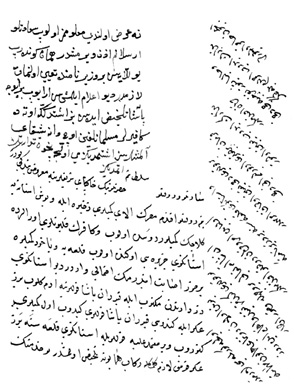

Belge 21: TKSA E.7002/51
Belge 21
Özet:
Mısır’dan yardımcı zahîre ile gemiler Rodos’ta bekliyor, Venedik kalyonları İstanköy Adası önünde fırsat kolluyor. İstanköy Adası’na asker göndermek gerekiyor. Donanma mühimmatına dikkat edilmektedir. İstanköy Adası’na bir vezir atanmalı. 500 cebeci beraberinde gidecek.
H. H. Turhan Sultan emri (tam metin):
“Ne ‘arz olundu, ma’lûmumuz olub sa’âdetlü Arslanım (Pâdişah IV. Mehmed) izin vermiştir. Hemân gönderib yollayasın. Bir vezir nâmında ta’yîn olunmak lâzımdır deyü i’lâm eylemişsin, arayub bir eyice paşa telhîs idesin. Biz işitdik ki ötede kâfirler Müslümanlığın üç dane şaykayı almışlar, siz işitmediniz mi? Evvelce niçün tedârik etmediniz.”
Yorum:
Belgenin emir bölümünde imlâ hatâları vardır: Turhan Sultan’ın el yazısı olabilir.